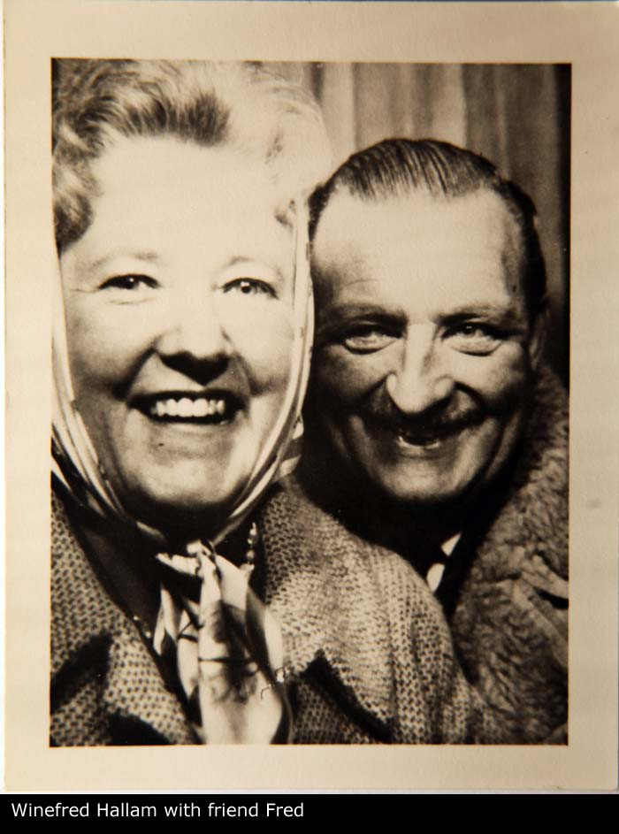

| Name | Full Name | Winefred Margaret Monica HALLAM |
| Forename | Winefred Margaret Monica | |
| Surname | HALLAM | |
| Sex | Female | |
| Birth | 22/06/1922, 21 Rock Road, Booterstown, Dublin, Ireland | |
| Death | 30/11/2007, St Vincents Hospital, Dublin, Ireland | |
| Parents | Arthur Joseph HALLAM x Catherine FOGARTY [Family] | |
| Change Date | Date | 30/04/2011 |
| Time | 17:03 | |
Winefred Margaret Monica HALLAM, eldest child of Arthur Joseph HALLAM and Catherine FOGARTY [Family], was born on 22/06/1922 in 21 Rock Road, Booterstown, Dublin, Ireland. Winefred died on 30/11/2007 in St Vincents Hospital, Dublin, Ireland aged 85. She was christened on 25/06/1922 in Parochial Church, St Mary's Booterstown, Dublin, Ireland. She was baptized on 25/06/1922 in Parochial Church, St Mary's Booterstown, Dublin, Ireland. On 22/06/1932 Winefred resided in 21 Rock Road, Booterstown, Dublin, Ireland. She resided in 1951 in 21 Rock Road, Booterstown, Dublin, Ireland. Winefred resided in 1954 in 37 Rock Road, Booterstown, Dublin, Ireland. Winefred resided about 2000 in Cairn Hill Nursing Home, Westminster Road, Foxrock, Dublin, Ireland. No children listed. |  |